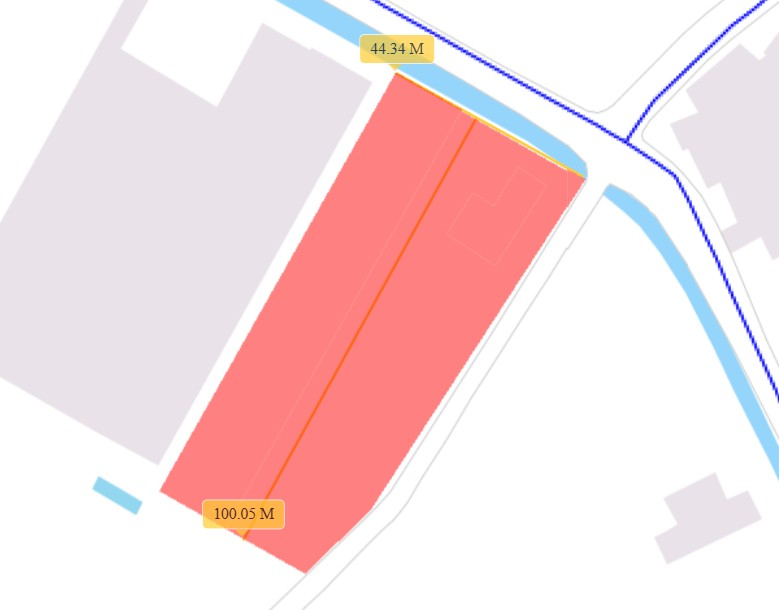
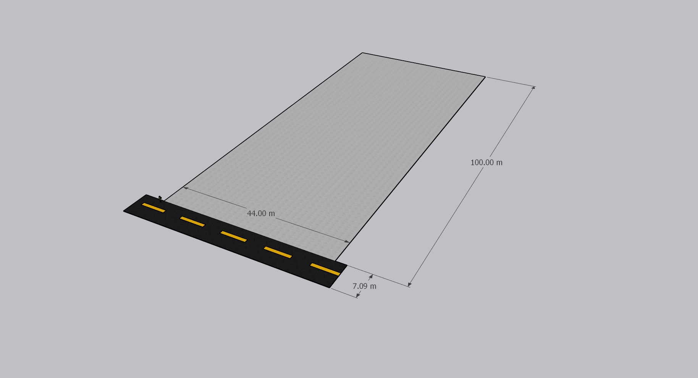

冬山近梅花湖雙面路大面寬三角窗丁種建地
宜蘭縣冬山鄉梅山段
土地面積
1,270.742坪
價格
9,530萬
單價
約7.5萬/坪
建地特色
地理位置優越
近梅花湖，雙面路，具三角窗優勢，地形方正
觀光潛力
鄰近斑比山丘，周邊農場林立，適合經營觀光工廠、休閒農場
交通便利
近羅東轉運站、冬山火車站，交通便捷
建築條件
容積率140%，建蔽率70%，面寬45米，深度100米
圖片集

地理位置

地形圖

地形圖2
詳細資訊
基本資料
- 地號：0330-0000、0331-0000、0332-0000
- 土地使用分區：特定農業區（丁種建築用地）
- 用途：土地/特定用途
- 面臨路寬：6米
建築條件
- 容積率：140%
- 建蔽率：70%
- 面寬：45米
- 深度：100米
聯絡我們
如需了解更多資訊，請透過以下方式聯絡：